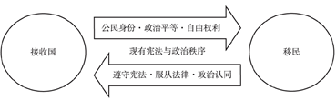

收录于合集

简 介
作者简介：包刚升， 复旦大学国际关系与公共事务学院教授
文章来源： 《政治学研究》 2018年第3期
编辑：曲雅倩
审核：李代霓
【内容提要】
**
**
如今，西方国家出现了选民政治分歧加大、右翼与极右翼政治力量崛起、政党体制稳定性下降的现象。这种西方政治的新现实，主要驱动力量是国内人口结构多样化的提高与族群宗教多元主义的崛起。人口族群宗教多样性的提高，可能导致西方国家内部政治分歧的加深和潜在政治冲突的增加。实际上，族群宗教多元主义与西方自由民主政体之间存在着一种政治上的不对称结构。这里的悖论在于，西方自由民主政体秉承的自由原则与平等观念导致了文化多元主义的兴起，但如果部分少数族群宗教群体和部分移民群体不能对西方国家形成政治认同，不能对现有宪法体制与政治秩序提供政治支持，就可能反过来削弱西方的自由民主政体。为了有效应对族群宗教多元主义带来的挑战，西方国家在移民、边境、族群、宗教等内外政策上很可能会转向更加保守主义、民族主义和现实主义的立场。
【关键词】
** 族群宗教 文化多元主义 民主 同化**
随着英国选择脱欧 、 唐纳德 · **特朗普 ( **Donald Trump ) 当选美国总统 、 法国右翼领导人玛丽娜 · **勒庞 ( **Marine Le Pen ) 的崛起，以及新选择党成为德国国会的第三大政党，西方世界似乎已经出现了某种政治新现实 。 这种政治新现实的主要驱动力量，是最近半个世纪以来西方社会人口趋势变化导致的族群宗教多元主义的崛起 。
历史地看，西方自由民主政体在包容不同文化、同化移民以及以制度化方式处理政治分歧方面拥有优势。但是，最近半个世纪以来，随着外来移民族群与宗教结构的变化以及人口结构中族群宗教多样性的提高，西方自由民主政体面临着一种政治上的不对称结构，即国家需要恪守“政治正确”原则与移民群体伸张政治权利之间的不对称结构。在自由原则与平等观念驱动的文化多元主义背景下，如果西方国家及其现有的政治秩序无法得到国内少数族群宗教群体和移民的政治认同，那么西方国家的自由民主政体就会被削弱。所以，西方国家能否在政治上同化异质性较高的少数族群宗教群体，在很大程度上决定着西方的政治前景。如果沿袭 20 世纪 60 年代以来流行的文化多元主义政策，西方自由民主政体面临的结构性困境。只会加剧。本文认为，为了应对这些问题的挑战，西方国家可能会采取更加保守主义、民族主义和现实的内外政策。
总之，本文希望为理解当今西方政治的新现实，特别是为理解族群宗教多元主义与自由民主政体之间的结构性张力提供新的分析框架。全文分为五个部分，第一部分是剖析西方政治的新现实及其直接原因，第二部分解读族群宗教多元主义崛起导致的政治问题，第三部分探讨族群宗教多元主义与自由民主政体之间的结构性难题，第四部分主要分析西方世界可能的战略选项与政策选择，第五部分则是全文的简要总结。
一、 西方政治的新现实及其直接成因
跟此前的总统大选相比，2016 年美国总统大选的新现实是左、右选民政治分歧程度的提高。在左翼，跟希拉里 ·克林顿 ( Hillary Cliton) 角逐民主党总统候选人的伯尼 ·桑德斯 ( Bernie Sanders) 已经非常接近欧洲社会民主党的立场。过去，人们认为美国没有“社会主义” ，如今这一例外可能已经消失。在右翼，代表共和党参选的右翼政治新人特朗普并不站在共和党的传统立场，他在主张减少政府干预、降低税率和废除奥巴马医改方案的同时，还主张要退出区域自由贸易协定、控制移民规模、修筑美墨边境高墙以及限制部分伊斯兰国家居民入境等。这些政纲意味着，特朗普在右翼立场上比主流共和党人走得更远。根据美国权威调查机构皮尤( Pew) 研究中心的民调，从 1994 年、2004 年到 2017 年，美国民主党选民和共和党选民在主要政治经济议题上的意识形态分歧，都呈现出显著的扩大趋势 。
与此同时，欧洲也出现了政治新现实。英国政治的新现象是脱欧派在 2016 年 6 月的公投中胜出以及如今保守党坚定的脱欧立场。在 2017 年法国总统选举中，年仅 39 岁的政治家埃马纽埃尔·马克龙( Emmanuel Macron) 带领他的新政党“法国前进! ”( La Ｒépublique En Marche! ) ，一举赢得总统与国会大选。极右翼政党国民阵线( National Front) 领导人勒庞也异军突起，在第二轮总统选举中赢得了全部选票的 1 /3 。而法国两大传统主流政党共和党与社会党在国会众议院选举中仅拿下 577 个议席中的 136 个和 45 个。这意味着法国政党体制已经发生重构。在 2017 年的德国大选中，现任总理安格拉·默克尔( Angela Merkel) 领导的基督教民主联盟只获得了 709 个议席中的 200 个议席; 而极右翼政党德国选择党( Alternative for Germany) 却实现了异军突起，一举拿下 12. 6% 的选票和 94 个议席，成为国会下院第三大政党。
简而言之， 如今美国与欧洲主要国家的政治呈现三个主要特点 : 第一，选民政治分歧程度进一步提高，不同意识形态阵营的分化加剧; 第二，右翼或极右翼政治力量得到强化，法国国民阵线和德国选择党这样的极右翼政党快速崛起; 第三，部分主要国家的传统政党出现了衰落，政党体制面临重构的压力。
那么， 西方何以呈现这样的政治新现实呢? 总体上，这里有两个主要驱动因素:一是 20 世纪80 年代以来经济全球化的加速，导致了欧美社会内部资本要素与劳动要素之间的分化、经济不平等的提高以及阶级分歧的上升 ; 二是最近半个世纪以来西方国家人口结构的变迁，特别是人口结构族群宗教多样性的大幅提高。两者相比，人口结构因素更为重要，其政治影响也更为深远，给西方自由民主政体带来的结构性挑战也更大。
过去，人口因素已经成为经济增长理论、市场营销学和社会学关注的重要议题，但中国的政治学界通常并不重视这一因素。实际上，不同的人口结构就是不同的选民结构、不同的政治力量结构以及不同的意识形态结构。
最近半个世纪以来，西方国家的人口结构已经发生重要变化。在美国，欧洲白人族裔—基督教人口比重的下降和少数族群宗教人口比重的上升，是人口结构变迁的主要趋势。按照皮尤研究中心的数据，欧洲白人族裔人口已经从 1960 年的85% 下降至 2005 年 67% ， 2050 年将会降至 47% ，届时将不足美国总人口的半数。起源于拉丁美洲的西班牙语族裔人口已经从 1960 年的 3. 5% 增加至 2005 年的 14% ，2050 年将增至 29% ，几近总人口的三成 。
众所周知，美国本来就是一个移民国家，历史上也被称为各族裔群体的“大熔炉”。尽管如此，到 20 世纪初为止，美国的移民主要来自欧洲，即以白人族裔基督徒移民为主。但是，20 世纪以来，特别是 20 世纪 60 年代中期以来，美国移民的来源地发生了重大变化，欧洲移民的数量与比重急剧下降，而来自拉丁美洲与亚洲的移民大幅增加。尽管美国历史上采取过或松或紧的移民政策，甚至采取过针对特定族裔移民的限制政策或配额政策，但到 20 世纪 60 年代为止，由于受到国际政治气候———冷战体系和美国作为自由民主标杆的需要———和国内政治气氛———黑人民权运动和左翼平权思潮的兴起———的影响，要求采用更为宽松的移民政策的呼声不断高涨。
1965 年，美国《移民与国籍法》得以通过，标志着美国根据国家与族裔来源决定移民配额政策的废除，美国移民政策迎来了非常宽松的时期 。
正是因为新移民法的通过、经济全球化的深入以及国际移民模式的改变，美国移民人口的族群宗教结构发生了很大变化。1960 年，所有美国移民中来自欧洲和加拿大的移民占 84% ，来自其他国家与地区的移民仅占 16% ; 2000 年，欧洲与加拿大移民仅占 19% ，而来自墨西哥、其他拉丁美洲国家以及南亚、东亚的移民分别占到 29% 、22% 和 23% ; 到了 2015 年，欧洲与加拿大移民仅占 14% ，而来自墨西哥、其他拉丁美洲国家和南亚东亚的移民分别占到 27% 、24% 和 27%。
这就是美国人口结构中西班牙语族裔人口和亚洲族裔人口快速攀升的主要原因 。尽管如今的美国跟历史上的美国同样都是移民接收国，但从 19 世纪到 20 世纪，美国移民的族裔与宗教背景却发生了巨大的变化。
在欧洲，最近几十年人口结构变迁的主要趋势是穆斯林人口比重的持续提高和伊斯兰化的加剧。根据皮尤研究中心的一项最新研究，2016 年欧洲穆斯林人口比重约为 4. 9% 。其中，法国、德国和英国的穆斯林人口比重分别达到 8. 8% 、6. 1% 和 6. 3% ，人口总量分别为 572 万、495万和 413 万。该研究还基于不同情形评估了 21 世纪中叶欧洲穆斯林人口的数量与比重。在欧盟维持高度移民政策的条件下，2050 年欧洲穆斯林将占欧洲总人口的 14. 0% ，而德国、英国和法国的穆斯林人口比重将分别高达 19. 7% 、17. 2% 和 18. 0%。
另一个重要的问题是，不同族群宗教人口的生育率是不同的。按照目前的统计，整个欧洲的非穆斯林族裔人口家庭平均生育率是 1. 6，即每个家庭平均生育 1. 6 个孩子，而欧洲穆斯林族裔人口家庭平均生育率是 2. 1 。这也加速了欧洲穆斯林人口比重的提高。总之，最近半个世纪以来，西方世界的一个主要趋势是，人口结构正在从欧洲白人族裔的基督教人口主导，转型为人口族群宗教结构的多样化，人口结构的异质性程度大幅提高。那么，为什么这种长期的人口结构变化会在最近一些年当中产生如此重大的政治影响呢? 这里有两层主要逻辑: 第一，人口结构变化对政治领域的影响有一个从量变到质变的过程。比如，如今美国欧洲白人族裔人口已经下降至 2 /3，欧洲的穆斯林人口比重已经达到 5% ，这些数据或许已经构成重要的“临界点”。第二，2007 ～ 2008 年全球金融危机及其后续影响。最近几年西方国家有宗教背景的恐怖主义事件的频繁发生，以及
二、 族群宗教多元主义崛起的政治后果
西方国家人口族群宗教多样性的提高，引发了国内社会政治分歧的上升，而这又会导致潜在政治冲突的增加 。 具体而言，这里包括了三种互相关联的机制 。
第一，在民主价值观方面，移民群体跟西方世界的主流人群存在显著差异。 比如，截至 2016年，美国有超过 5000 万西班牙语族裔的人口是源于拉丁美洲国家的移民和移民后代。有理由相信，这些西班牙语族裔移民的民主价值观，跟原先生活在美国的欧洲白人族裔基督教人口的民主价值观存在着显著差异。有研究认为，拉丁美洲地区公民的民主价值观并不稳固，相当比例的公民仍然持有威权主义或半民主的价值观。
再比如，在民主价值观方面，欧洲穆斯林移民群体也大大不同于原先白人族裔基督教群体。根据皮尤研究中心 2013 年对全球穆斯林的民调，在关于是否支持沙利亚法( 伊斯兰教律法与法律) 成为官方法律这一问题上，在埃及、尼日利亚、马来西亚、巴基斯坦等国均有超过 7 成的穆斯林表示支持，即他们希望建立伊斯兰教律法对国家的统治 。皮尤研究中心这项民调，尽管不是限制在欧洲穆斯林人口上，但对我们理解穆斯林人口的政治信念与民主价值观是一个重要参考。
第二，移民群体基于族群 、 宗教 、 国家的政治认同，跟西方原先主流群体也存在着较大差异，这同样可能对西方民主政体构成压力 。 不少研究揭示，跟拉丁美洲与亚洲移民相比，欧洲移民对美利坚合众国的政治认同与国家认同程度普遍很高。另外，如今的移民规模更为庞大，他们更容易形成一个个聚居区，这样就更难被同化。美国学者塞缪尔·亨廷顿( Samuel Huntington) 在《我们是谁?》( Who Are We?) 一书的开头，就提出了一个严肃的问题: 西班牙语族裔的移民对美国是否真的有国家认同 ?
欧洲的情况也是类似的。特别是，欧洲主要国家穆斯林人口的国家认同度就显著低于白人基督教人口，欧洲穆斯林人口的宗教认同甚至都高于国家认同。比如，英国、德国、法国的穆斯林人口分别有 81% 、66% 和 46% 的比例首先认为自己是穆斯林，而首先认为自己是本国公民的比例分别仅为 7% 、13% 和 42% ，都低于前者 。
第三， 人口结构中族群宗教多样性或异质性的提高本身 ——— 无论这种异质性是否跟民主价值观或政治认同有关 ——— 同样会对自由民主政体带来压力 。 一种流行的观点认为，随着一个国家族群宗教异质性程度的提高，民主政体的稳定性与有效性可能被削弱。美国政治学者罗伯特·达尔( Ｒobert Dhal) 认为，基于宗教、语言、种族、族裔集团的亚文化多元主义对自由民主政体存有负面影响，甚至“多元亚文化的压力相当大的国家不大可能实行竞争性政治体制” 。美国政治学者杰克·斯奈德( Jack Snyder) 指出，在一个多族群社会的民主政治运作中，政治精英很可能选择将族群因素作为政治动员的基础，从而更有可能激发族群之间的政治暴力 。美国政治社会学者罗伯特·帕特南( Ｒobert D. Putnam) 的研究发现，族群—宗教多样化程度越高，社会信任程度就越低。而一个社会信任度的降低，不利于民主政体的维系、稳定与绩效 。
需要说明的是，一个国家的族群宗教多样性究竟是否会导致更大的政治分歧，或者是否会引发严重的政治冲突，还取决于三个层次的不同因素: 少数族群人口占总人口的比率，少数族群与多数族群在发展程度、政治观念与宗教传统上的差异性，以及少数族群人口在政治上被同化 ( assimilated) 程度。当然，移民或少数族群的政治同化，是一个重要且充满争议的问题。美国学者米尔顿·M． 戈登( Milton M. Gordon) 早在 1965 年就系统讨论过美国生活中的同化问题以及三种不同路径的利弊，即基于盎格鲁文化的同化、大熔炉意义上的同化以及文化多元主义 。实际上，西方主要国家都不同程度地制定了某种移民归化( 亦即同化) 入籍的政策，其理论基础就在于同化移民的考虑，其中隐含的政治假设在于，如果移民群体长期跟主导族群之间保持巨大的差异性，就不利于一个政治共同体的维系。
三、 自由民主政体与族群宗教多元主义 : 结构性困境
面对族群宗教多样性的提高，西方自由民主政体面临着某种结构性困境。这里首先要理解威权政体与民主政体在应对这一问题上的不同 。对一个威权政体来说，具有不同族群宗教背景的大量移民进入之后，它可能挑战的主要是威权政体的统治能力。在威权政体下，移民群体无法获得正式的政治参与途径，其可能的政治表达来自于政治反抗。但是，对威权政体来说，只要它的统治能力能够有效压制移民群体可能的政治反抗，这种政体就能毫无困难地维系其原有的统治方式。因此，移民群体的进入，通常不会改变威权政体的基本政治运作方式。
但是，对民主政体来说，不同族群—宗教背景的大量移民进入，所导致的是完全不同的政治情境。通常来说，移民一旦获得公民身份，他们就可以进行合法的政治参与、政治动员和政治竞争，甚至可以发起大规模的社会运动。一旦移民群体进入一个民主政体，他们不仅仅是需要遵守本国法律的公民，而且还是民主政体下主权者的一部分。随着这部分新的“主权者”的到来，他们完全有可能成为重塑民主政体下政治规则、政治观念与公共政策的新力量。从结构上看，民主政体本身的品质与运作，就取决于组成该民主政体的公民团体的性质。大规模移民的进入，会改变组成民主政体的公民团体本身，因而也会影响民主政体的实际运作。所以，跟威权政体不同的是，民主政体在接收和吸纳大规模移民时，移民群体反过来会影响民主政体本身。
当然，从制度设计来看，自由民主政体本身是一种制度弹性很大的政体形式，在包容社会多样性方面有着相当的优势。具体而言，在集体规则方面，西方自由民主政体秉承民主原则，这既解决了合法性问题，又提供了一种有效的集体决策规则。在个人规则方面，自由民主政体秉承自由原则，这一方面更符合人人自由平等的权利原则，另一方面又更能鼓励个人主动性和首创性，更可能创造出经济繁荣的局面。就不同国家的合作与国际秩序而言，自由民主政体更接近于某种形式的“人类合作的扩展秩序”( extended order of human cooperation) 。它有着极强的扩展能力，并能塑造可扩散的意识形态与全球秩序 。正是基于这些具体的机制，从 19 世纪到 20 世纪，经由工业革命、政治革命与全球化的扩展，源自西欧的这种自由民主政体模式，既在经济、科技与文化方面创造了非凡成就，又展现出相当高的包容社会多样性的能力，还逐步在 20 世纪中叶塑造了一整套基本上互为有利的国际秩序与国际规则。
但是，自由民主政体对多样性的包容不是无限的。当它面对大规模的、政治与文化上差异性极大的移民群体涌入时，这种政体也可能束手无策。关键问题在于， 当遭遇族群宗教多样性大幅 **** 度提高之后，西方民主政体面临着政治上的几种不对称结构 。
第一种不对称结构，可以称之为不对称的自由原则 。 这里的不对称是: 自由民主政体需要尊重包括移民在内的每一个人的政治自由、经济自由、宗教信仰自由及言论自由等，这是一种普遍自由规则; 但移民一旦成为合法公民，他们不仅拥有全部的自由权利，而且拥有了反对普遍自由规则的自由，他们甚至可以就此进行政治抗争。
第二种不对称结构，可以称之为不对称的民主规则 。 这里的不对称是，自由民主政体需要尊重所有民众( 包括移民群体在内) 的政治参与权利，并且需要借助自由协商与多数规则来决定公共事务，但来自欧洲以外的少数族裔移民群体更有可能缺乏政治认同，民主规则意识淡薄，甚至以政治抗争来反对既有的自由权利与民主规则。
第三种不对称结构，是由上述两种不对称原则导致的不对称的权力与权利结构 。 这里的不对称结构是，自由民主政体下的国家需要按照政治规范来运作权力，需要遵守民主宪法与规则意识，甚至也需要守卫已然形成的“政治正确”( political correctness) 原则，但拥有公民身份与自由权利的移民和移民群体，并不一定会尊重宪法与基本规则，并不一定会信奉自由民主的基本价值观，甚至还拥有成为“不忠诚的反对派”( disloyal opposition) 的权利———而即便他们成为自由民主政体“不忠诚的反对派”，他们的自由权利仍然受到法律的充分保护。这就导致了自由民主国家与移民群体之间的不对称的权力与权利结构，参见图 1。
图 1自由民主政体下的不对称结构: 国家与移民
在这种不对称的结构中，移民问题所隐含的政治契约是一个关键点。按理说，移民接收国与移民之间应该存在着一种隐含的政治契约。如果不是基于这种政治契约，要么一个移民接收国不会大规模地接受移民，要么这种大规模的移民就会给接收国带来严重的政治问题。这个隐含的政治契约应该包括两个对等的基本条件: 一方面，西方世界的接收国应该按照现有宪法之下的基本政治原则来善待每一个合法移民，包括赋予移民以公民身份，使其享有与接收国公民无差别的政治平等和自由权利———换言之，移民并非古代世界的奴隶或现代世界的二等公民; 另一方面，移民亦需要承担其相应的政治义务，包括遵守接收国的宪法，尊重接收国的政治秩序，服从该国法律，遵从该国惯例，以及接受对接收国的国家认同与政治认同，（参见图 2。）

图 2移民隐含的政治契约
但问题是，这一隐含的移民政治契约，同样是一种不对称结构。西方的移民接收国面对的是硬约束，而移民与移民群体面对的却是软约束。只要移民作为个体没有涉嫌犯罪或严重违法，他们是无法被追究违反“移民契约”的法律责任的。移民政治契约中要求移民与移民群体做到的遵守宪法、服从法律和接受政治认同等政治义务，都是难以操作的。其实，此处提出的“移民隐含的政治契约”，在很多西方国家都是有法律依据的。比如，美国就要求正式获得美国公民身份的新移民在移民官面前做一个“效忠美国”的法律宣誓。但是，这个法律宣誓或法律义务，同样是难以执行的。
而使这种结构性问题愈发突出的，是 20 世纪 60 年代以来文化多元主义( cultural pluralism) 在西方世界的崛起与流行。当然，一般认为，西方自由民主政体本身就具有多元主义色彩。一方面，自由民主政体应该具有包容多样性和不同文化的能力; 另一方面，多样性甚至还强化了自由民主政体本身的力量，增加其弹性与扩展能力。这是传统意义上自由多元主义的基本观点 。
但是，这种自由多元主义没有解决两个问题: 第一，自由民主政体对各种类型多样性的包容是否存在限度? 第二，这种自由多元主义的结果，究竟是主流文化基于自由民主原则对其他文化的同化与吸收，还是维系各种不同文化多元并存的局面?
实际上，对绝大多数西方国家来说，20 世纪中叶之前的主流观点是同化论。20 世纪 60 年代以来，文化多元主义逐渐兴起，特别是随着左翼平权运动的发展，文化多元主义甚至一度成为欧美社会的主要意识形态。然而，最近二三十年以来，西方国家又开始质疑和反思文化多元主义 。这样，同化论者与文化多元主义者之间存在激烈的争论。
这一争论的前提假设是: 西方自由民主政体的稳定性与有效性，是否依赖于具有某种特定政治传统或文化的公民团体构成? 尽管自由民主思想如今已成为具有全球性影响的意识形态，但自由民主政体首先诞生于西欧和北美，随后再扩展至世界其他地区。历史地看，自由民主政体不过是人类政治进化的特例，而非常态。自法国思想家托克维尔( Tocqueville) 以来，包括塞缪尔·亨廷顿在内的很多学者都认为，自由民主政体的稳定性与有效性，高度依赖于其公民团体的民主价值观与规则意识，乃至宗教传统 。实际上，欧美政治文明的演进，接续的是从古希腊到古罗马的古典文明传统，而后又经历了基督教传统的浸润滋养，并经由文艺复兴、宗教改革，再经历工业革命和现代性转型，始有后来的局面。这种理论认为，欧美政治文明是特殊的，是在特定社会背景、政治观念及公民团体构成基础上产生的，有着相当的独特性与优越性。按照这种逻辑，西方世界要想维系其自身的政治经济文明，就需要守卫其文化的独特性 。
然而，这种西方世界较为保守的历史叙事，在最近三四十年中快速衰落了，甚至变成了一种政治不正确的表述。按照文化多元主义观点，即便在西方社会内部，西方自身历史上形成的政治经济文明模式也只不过是诸种不同文明模式中的一种。而不同文明模式之间并不存在高低之分，只是存在差异。换言之，不同的文明、宗教传统、政治观念和价值观之间不过是平行关系，或者说是一种多元的平等关系。
这样， **正是自由民主政体下自由原则和平等观念发展到极致，导致了 20 ** 世纪晚期相对主义和文化多元主义的兴起，即强调所有不同个体 、 所有不同群体 、 所有不同宗教传统与文化观念的平等性和多元性 。 这就在无形中导致了西方原先主流价值观念的削弱 。 其实，这是西方政治文明进化的悖论 : 西方政治文明越发达，自由原则和平等观念越是发展到极致，一种无限包容的多元主义成为政治正确原则之后，在一个复杂的真实世界中，这种现代化程度较高的政治文明反而削弱了对抗现代化程度较低的其他政治模式的力量 。 用通俗的话来说，西方政治文明发展到如今的高级阶段，反而走向了 “ 自费武功 ” 。
而在美国学者劳伦斯·哈里森( Lawrence E. Harrison) 看来，尽管文化多元主义与多元文化主义大行其道，道德相对主义广泛流行，但这种观点的理论基础非常脆弱。总体上，文化相对主义主张，没有一种文化比其他文化更好或更坏———只是不同而已。由此推论出，西方社会内部的主流文化和各种少数族裔文化都只是平等多元的关系。哈里森认为，如果从人类学或文化研究视角来看，当然应该主张“各美其美、美美与共”，但是，如果要评估何种文化有助于一个社会的经济繁荣、民主治理和社会公正，那么，文化多元主义与多元文化主义就成了巨大的绊脚石。显然，有些文化根本无助于促进经济繁荣、民主治理与社会公正这些人类的共同目标 。
因此， 一种较为保守的见解认为，对于维系一个政治共同体来说，某种程度的同化是必需的 。 **一般认为，同化是指一个群体 ( 通常是少数族群) 获得了其他群体( 通常是主导族群) **“ 的记忆 、 情感以及态度，并且通过分享他们的经历和历史，与他们一起被整合进了一种共同的文化生活 ” ****。 更具体地说，一个多族群 、 多宗教社会的同化存在两种不同的类型，一种是政治 — 法律意义上的同化，一种是社会 — 文化意义上的同化 。 前者更强调少数族群接受原先主导族群的宪法体制、政治秩序、法律规范以及产生基本的政治认同等，由此实现在政治—法律意义上对主流社会的融入; 后者更强调少数族群接受原先主导族群的主流文化、情感记忆、心理倾向以及宗教传统等，由此实现在社会—文化意义上对主流社会的融入 。而实际上，少数族群宗教群体起码需要在政治—法律意义上被同化，能够在政治规则与政治秩序意义上融入主流文化，才能维系国家这个共同体在政治上的良性运转。
四 、 西方世界的战略选择 : 外部政策与内部政策
**
**
那么，西方国家会如何应对族群宗教多样性提高带来的结构性困境呢? 其实，在历史上，西方国家在处理类似问题上有过非常成功的经验。美国过去一直被称为“大熔炉”，意指具有不同族群宗教背景的移民抵达美国以后，基本上都能融入美利坚合众国这个政治共同体，成为美国社会的一分子，并能形成强烈的国家认同和公民身份认同。尽管如此，这个大熔炉实际上是有条件的，那就是最初的定居者主要是来自英国的新教移民，后来则主要是来自西欧白人族裔的基督教移民，再后来才是来自东欧白人族裔移民。美国的这种移民来源结构一直维持到了 19 世纪末。
19 世纪晚期，美国移民政治的一个重要事件，是华裔劳工增加引起了美国国内社会的反弹，最终导致 1882 年“排华法案”的通过。作为中国学者，我们对此当然非常不满。但排华法案的出现本身却有着特定的政治逻辑。该项法案的提出原因，是有议员认为华人劳工很难被同化，而这对美国社会来说可能是一个威胁。所以，有议员主张: “门必须被关上。”跟今天相比，那个时代的美国政治家和立法者要现实主义得多，也更少讲究后来意义上的政治正确。1882 年以后，尽管美国移民政策经历过或松或紧的不同时期，但直到 1965 年新的移民法案被通过之前，他们一度长期实施族裔或国籍来源地配额制政策，即根据当时美国人口的族裔比例构成来决定相应族裔或国籍来源地的移民配额数量 。以今天的标准来看，这一移民政策更保守主义、更现实主义、更民族主义，也不讲究后来的“政治正确”原则。
法国政治社会学者米歇尔·韦耶维欧卡( Michel Wieviorka) 研究了近现代欧洲多族群国家进行国家构建和政治整合的经验后认为，它们主要借助三个途径进行了成功的民族整合: 一是充分发展工业化和工业社会，二是建立一个平等主义的国家，三是塑造民族认同 。但这种整合主要针对的是欧洲内部不同白人族裔的基督教人口。当然，这种国家构建与民族整合不是没有产生历史遗留问题，比如英国的苏格兰问题、北爱尔兰问题，西班牙的巴斯克问题、加泰罗尼亚问题等，都是这种国家构建和民族整合不充分的产物，至今对这些国家来说仍然是政治上的沉重包袱。
然而，今天西方世界的绝大多数移民不再是来自欧洲或西方世界的内部，他们的主体不再是白人族裔的基督教群体。面对这样的人口结构巨变，西方世界究竟应该选择何种应对的战略呢?分析可能的战略，首先需要分析它们的约束条件。西方国家面临着两种主要的约束条件: 一种是结构性的，一种是制度性的。
两个主要的结构性约束条件是全球化与人口趋势。对西方国家来说，20 世纪 80 年代以来加速的全球化几乎不可逆转，全球贸易、投资与人口流动等指标是经济全球化的重要体现。在可预见的将来，全球化的基本趋势不仅会继续维持，而且可能还会继续深化。从人口结构来看，西方国家目前人口结构的族群宗教异质性程度已经大幅提高。在可预见的未来，移民作为一个全球现象，其驱动力尚未衰竭，而西方社会内部白人族裔生育率的显著降低和少数族裔拥有相对更高的生育率，也是一个基本事实。
西方国家还面临着几种主要的制度性约束条件。首先是西方国家是自由民主政体。这意味着合法移民不仅跟其他公民拥有同样的政治平等和自由权利，而且他们一样可以进行政治参与和政治竞争，亦可借助政治动员、政治抗争等手段发挥更大影响力。其次是欧美社会基本都实行福利国家政策。这既是它们吸引移民迁入的直接诱因之一，也导致了移民会增加社会福利成本。
最后是欧美国家民主运作以选举政治和政党政治为主要平台，而移民既有可能成为重要政治议题，又可能成为重构政治格局的重要力量。比如，美国民主党在移民议题上通常立场温和，原因在于获得投票权的移民往往是民主党的支持者。
一般而言，今天西方国家可能的战略选择，不得不考虑上述诸种约束性条件。但不能排除一种可能性，即成功的战略选择或正确的解决方案需要突破上述诸种约束性条件的限制。这里的问题更为复杂。
的政党体制是两党主导的; 相反，越是带有比例代表制色彩的国家、越是多党制的国家，其主流政党越容易受到原先选民阵营和政治立场的束缚。因此，当传统中右主流政党无法继续右转时，这样的国家就容易有新的右翼或极右翼政党崛起。这就解释了法国和德国最近几年政党政治的重构。
实际上，最近几年主要西方国家右翼政党的政治纲领，也佐证了这种内外政策上的转向。美国总统唐纳德·特朗普作为共和党人，在政治纲领上更强调美国优先、保卫边境、限制部分伊斯兰国家移民等。英国首相特蕾莎·梅( Theresa May) 作为英国保守党人，支持推进脱欧，而脱欧意味着恢复英国对边界和移民政策的实质性控制权。法国国民阵线领导人玛丽娜·勒庞则明确反对移民，她富有煽动性地声明，移民不过是对法国人口的“有组织的替代”。她同样反对欧盟，主张从欧盟手中夺回法国的边境控制权。新崛起的德国选择党把移民和难民都视为“入侵者”，该党呼吁整个德国应该反对“外国人的入侵”。奥地利右翼政党自由党则主张，要尽快终结欧洲的伊斯兰化进程。所有这些欧美重要政治家或重要政党的主张，都跟本文对西方国家结构性困境的分析是吻合的。
五 、 结论 : 西方政治可能的前景
从美国到欧洲，西方国家已经出现了某种政治新现实。国内社会政治分歧增加、右翼或极右翼政治力量崛起以及传统政党体制遭到冲击的背后，主要原因是人口结构的巨变和族群宗教多样性的上升。对于部分异质性程度很高、不认同西方主流价值观和政治秩序的移民群体而言，西方自由民主政体能否有效地包容这种多样性，是一个严峻的挑战。实际上，大规模移民进入以后，西方自由民主国家与异质性程度较高的移民群体之间，存在着一种政治上的不对称结构。原本存在于接收国与移民之间隐含的政治契约，在现实政治中对新移民群体并无约束力可言。那么，对如今的西方国家来说，在诸多约束性条件之下，它们能否以有效的内外政策来应对这种政治新现实呢? 这就是一个问题。
总体上，目前西方国家更有可能采取 “ 向右转 ” 的战略来应对这种结构性困境 。 在外部政策上，西方国家的人口流动政策将更有可能从过度的全球化转向保守主义 、 民族主义和现实主义 ;在内部政策上，西方国家的族群宗教政策将更有可能从 “ 自由的 ” 文化多元主义转向更民族主义和保守主义的立场 。 当然，一个特定国家是否能够采用这样的战略选择或政策组合，则取决于很多实际的政治条件 。
鉴于以上分析，考虑到族群宗教多元主义与西方自由民主政体之间存在的结构性困境，西方世界的政治究竟会展现一种怎样的前景呢? 有人相对乐观，有人则相对悲观。从较为乐观的视角看，过去二三百年的历史进程揭示，西方民主政体的制度模式展示出了包容变化的能力和相当大的制度弹性。在各种可能的冲击之下，西方政治通常会经历一个结构性的调整过程，通过结构性调整来为应对这种内部挑战或外部冲击提供解决方案。如果借鉴英国历史学家阿诺德·汤因比( Arnold Toynbee) 的视角，即用挑战与应战的关系来解读一种文明模式可能的变迁与进化，那么，这就可能是一个相对乐观的过程 。
但问题在于，如今西方世界面临的结构性挑战，特别是国内社会族群宗教多样性的大幅提高，是否已经突破了西方民主政体的制度框架所能包容的限度? 换句话说，如果应对族群宗教多样性带来的挑战，其政治解决方案需要突破目前西方自由民主政体的制度框架，那么这种政体模式就不得不作出某种实质性的调整，甚至不排除会损伤自由民主政体的制度框架。必须承认，这种可能性是存在的。所以，公允地说，面对族群宗教多元主义兴起的挑战，西方民主政体的前景究竟会怎样，我们只能拭目以待。
另一个值得注意的事实是，西方世界并非铁板一块，而是存在着丰富的多样性。就国别而言，西方政治版图上那些移民比例相对较低、移民的族群宗教背景跟原先主导族群差异性较低、移民的政治同化较为成功的国家，未来就更容易应对这方面的问题，由族群宗教多样性带来的政治分歧和政治冲突也更为可控，它们大致上能够更成功地应对族群宗教多样主义带来的挑战。但如果是相反的情形，由族群宗教多样性带来的政治分歧和政治冲突就更难以控制，这些国家就更容易陷入族群宗教多元主义与自由民主政体之间的结构性困境。
在可预见的将来，西方国家很可能会因为应对族群宗教多元主义挑战的能力不同，而产生新的政治分化。有的国家会走向新生，而有的国家则面临着一个更加不确定的未来。对于每一个西方主要国家来说，究竟会面临一种怎样的政治命运，恐怕只有时间才能作出最终的回答。
- 篇幅限制，注释及参考文献详见原文
更多阅读：